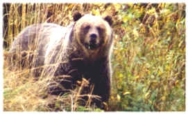

I hope you get a chance to see the beautiful country around Rexburg. The Lord has created these beautiful places and animals "both to please the eye and gladden the heart." (Doctrine & Covenants 59:18) These handsome beasts live in the forest to the North and Northeast of Ricks College so ". . . be wise; what can I say more?" (Jacob 6:12) WJK
This is Ursus horribilis, a little smaller and more temperamental than Ursus Arctos horribilis, the Alaskan Brown usually seen in Salmon fishing scenes.

Return to Syllabi